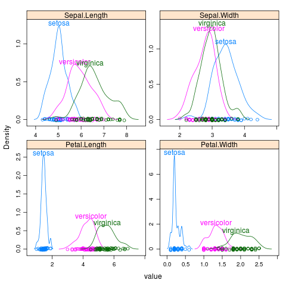

|
chemscore
data(Chem97,package="mlmRev")
library(lattice)
p <- densityplot(~gcsescore|gender,Chem97,
groups=factor(score),layout=c(1,2),
n=500,plot.points=FALSE)
direct.label(p,"top.points")
|
|  |
iris
library(reshape2)
iris2 <- melt(iris,id="Species")
library(lattice)
p <- densityplot(~value|variable,iris2,groups=Species,scales="free")
direct.label(p,"top.points")
|
 |
loci
loci <- data.frame(ppp=c(rbeta(800,10,10),rbeta(100,0.15,1),rbeta(100,1,0.15)),
type=factor(c(rep("NEU",800),rep("POS",100),rep("BAL",100))))
library(ggplot2)
p <- qplot(ppp,data=loci,colour=type,geom="density")
direct.label(p,"top.points")
|